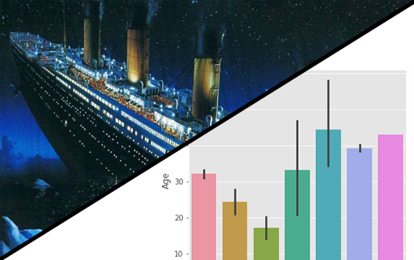
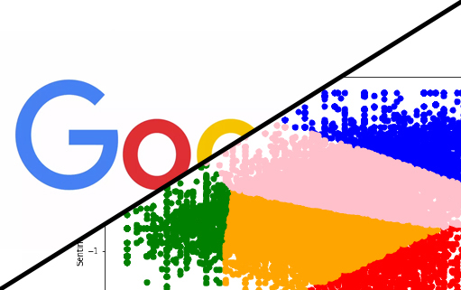
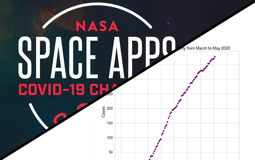

25 de Janeiro de 2021
Abaixo, estão meus principais projetos que desenvolvi ao longo do meu curso como engenheiro e cientista de dados,
utilizando a linguagem Python, os quais envolvem análises exploratórias dados através do uso de recursos
estatísticos e gráficos, com problemas que envolvem classificação, regressão, clustering e deep learning
para modelagem de análise preditiva com machine learning.
Todos os projetos abaixo podem ser encontrados em meu
GitHub. Além disso, você também pode conferir meus projetos
de análise de dados realizados em Power BI e
Tableau.
Caso tenha interesse, você pode conferir as informações completas sobre minhas experiências, perfil e formações
em meu currículo.

Uma análise em profundidade no banco de dados de incidentes do Titanic, com exploração de dados e abordagem
de muitos modelos, com machine learning, para prever a chance de sobrevivência dos tripulantes.
Mineração de dados abertos, via RPA, de jogadores de um videogame, transformação e estruturação
dos mesmos dados para a elaboração de um analytics e plot de gráficos.

Análise exploratória e preditiva, utilizando método de clustering via machine learning, com base de dados contendo
informações sobre aplicativos da Google Play Store.

Projeto Aurora, criado no hackathon Space Apps, pela NASA, é o projeto de uma plataforma de dados que ajuda as organizações governamentais a reduzir o impacto da velocidade de disseminação do COVID-19.